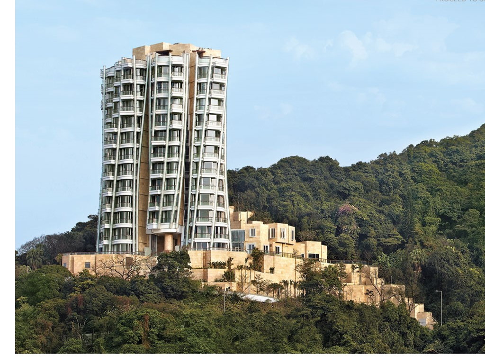

Client: Swire Properties
Location: Hong Kong, HKSAR
Type: Residential High-rise
Size: 3,020 m², 43m high
Team: Gehry Partners, Swire Properties
Highlights:
Description:
The building consists of 12 residential units which range from 560 to 640 m2 (6,000 to 6,900 sq ft), including two duplexes with pools. Additional features on the 3,020 m2 (32,500 sq ft) site include underground parking, swimming pools, gyms, rainwater recycling for irrigation, and electric car charge systems. A 580 m2 (6,200 sq ft) apartment, taking up the entire eighth floor, became the most expensive apartment in Hong Kong when it was sold for HK$470 million in August 2012